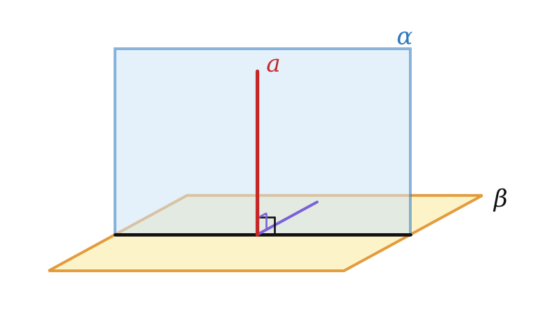
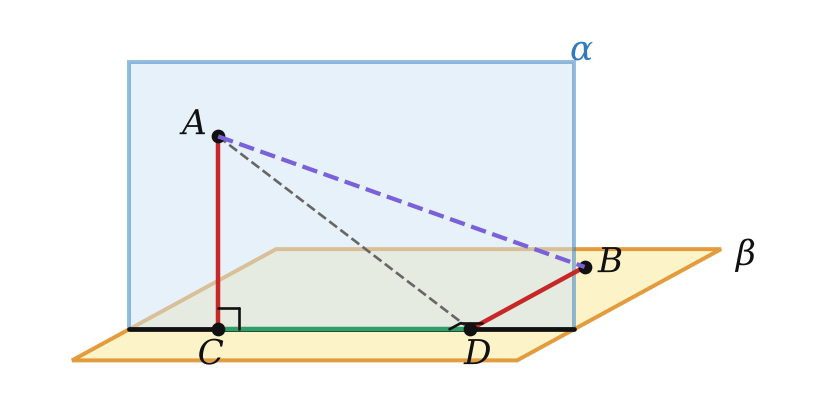
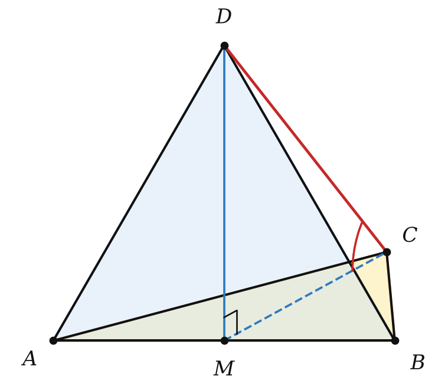

Теория
Две плоскости называют перпендикулярными, если угол между ними равен 90°. Обозначение: α ⊥ β.
Примеры: стена и потолок, дверь и пол, сетка и теннисный корт. Перпендикулярные плоскости образуют при пересечении четыре прямых двугранных угла.
Признак перпендикулярности плоскостей
Если одна из двух плоскостей проходит через прямую, перпендикулярную другой плоскости, то эти плоскости перпендикулярны.

Пусть a ⊂ α, a ⊥ β, плоскости пересекаются по прямой b, a ∩ b = B. Возьмём на a точку A ≠ B. Так как a ⊥ β, то AB ⊥ b. В плоскости β проведём BC ⊥ b. Угол ABC — линейный угол двугранного угла с ребром b. Но AB ⊥ β, поэтому AB ⊥ BC: ∠ABC = 90°. Значит, α ⊥ β. ∎
Пример: грань AA₁B₁B прямоугольного параллелепипеда перпендикулярна основанию ABCD, потому что проходит через ребро AA₁ ⊥ (ABC). Так проверяют вертикальность стены: отвес, приложенный к стене, должен прилегать к ней по всей длине.
Свойства перпендикулярных плоскостей
Если две плоскости перпендикулярны, то прямая, проведённая в одной плоскости перпендикулярно прямой их пересечения, перпендикулярна другой плоскости.
Пусть α ⊥ β, α ∩ β = a, в α проведена AB ⊥ a (B ∈ a). В β проведём BC ⊥ a. ∠ABC — линейный угол, он равен 90°. Тогда AB перпендикулярна двум пересекающимся прямым плоскости β — a и BC, и по признаку 10.1 AB ⊥ β. ∎
Если две плоскости перпендикулярны и через точку одной из них проведена прямая, перпендикулярная другой, то эта прямая лежит в первой плоскости.
Если каждая из двух пересекающихся плоскостей перпендикулярна третьей плоскости, то прямая их пересечения перпендикулярна этой третьей плоскости.
Ключевая задача 2 очень полезна в пирамидах: если две боковые грани перпендикулярны основанию, то их общее ребро — высота пирамиды.
Не всякая прямая одной из перпендикулярных плоскостей перпендикулярна другой! Только та, что перпендикулярна линии пересечения (теорема 15.2). Например, диагональ стены не перпендикулярна полу.
Отрезок между перпендикулярными плоскостями

Пусть точки A и B лежат в перпендикулярных плоскостях, AC и BD — перпендикуляры к линии пересечения l. По теореме 15.2 AC ⊥ β, значит, AC ⊥ CB. В плоскости β треугольник CDB прямоугольный: CB² = CD² + DB². В итоге AB² = AC² + CD² + DB² — как диагональ «коробки».
Разбор примеров
Плоскости α и β перпендикулярны и пересекаются по прямой l. Из точек A ∈ α и B ∈ β опущены перпендикуляры AC = 3 и BD = 4 на прямую l, CD = 12. Найдите AB.
AB² = AC² + CD² + DB² = 9 + 144 + 16 = 169, AB = 13.

Правильные треугольники ABC и ABD со стороной 6 лежат в перпендикулярных плоскостях. Найдите CD и угол между прямой CD и плоскостью ABC.
1) M — середина AB, DM ⊥ AB — линии пересечения, по теореме 15.2 DM ⊥ (ABC), значит, DM ⊥ MC.
2) DM = CM = 3√3, CD = √(27 + 27) = 3√6.
3) MC — проекция DC на (ABC), треугольник DMC равнобедренный прямоугольный: угол 45°.
Докажите, что диагональные сечения AA₁C₁C и BB₁D₁D куба перпендикулярны.
BD ⊥ AC (диагонали квадрата), BD ⊥ AA₁ (AA₁ ⊥ основанию). По признаку 10.1 BD ⊥ (AA₁C₁). Плоскость BB₁D₁ проходит через BD, по признаку 15.1 плоскости перпендикулярны. ∎
Задачи урока
Реши в тетради, к каждой задаче — чертёж. Разберём на занятии.
Тест к уроку
Домашнее задание
Задачи Д1–Д6 ниже, к каждой — рисунок. Из учебника: № 15.2, 15.5, 15.14, 15.29. Выучить признак 15.1 и теорему 15.2 с доказательствами, формулировки ключевых задач 1 и 2.